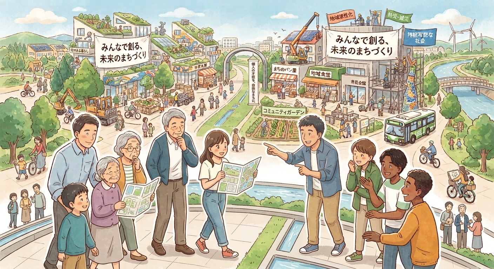
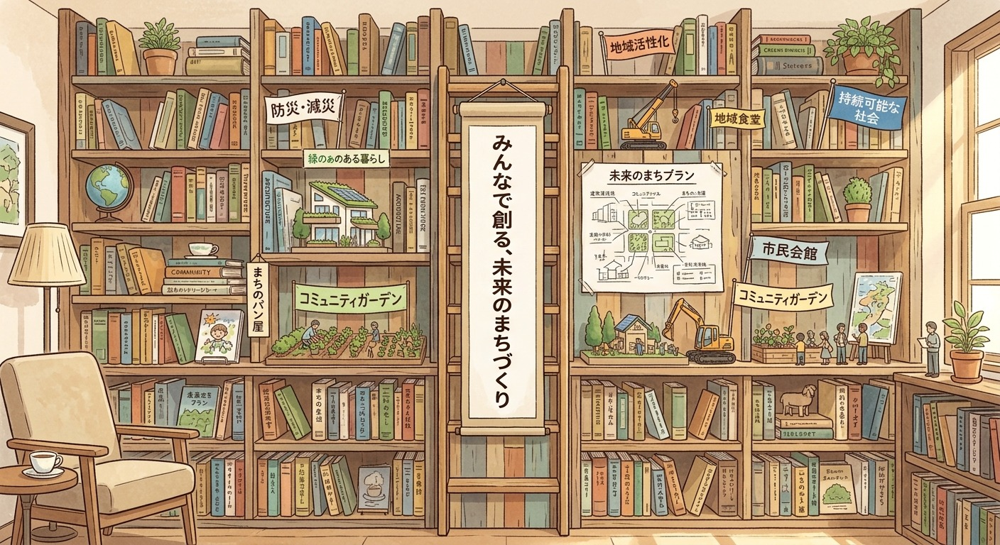
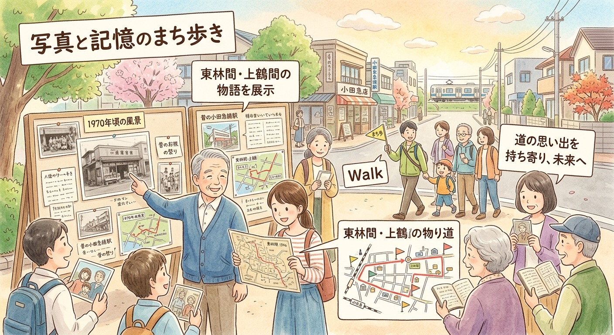
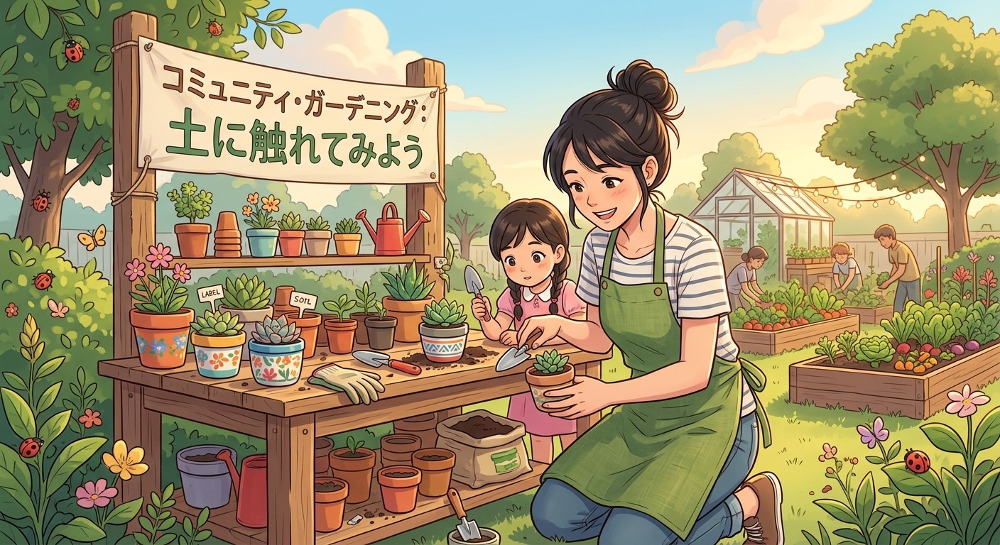

やってみたい
まち歩きをしたい。作品を展示したい。本を通じて人と出会いたい。まだ形になっていないアイデアも歓迎です。
アイデアを相談する ↗このまちで、何かやってみたいあなたへ。
アイデアも、得意なことも、空いている場所も。
人と人がつながれば、小さな思いつきが動き出す。
住民・お店・地域で働く人。世代や所属を越えて。

立派な企画書も、特別な肩書もいりません。
あなたの身近なところから始めましょう。
まち歩きをしたい。作品を展示したい。本を通じて人と出会いたい。まだ形になっていないアイデアも歓迎です。
アイデアを相談する ↗写真、文章、音楽、工作、パソコン。得意なことや、少しの時間を持ち寄って、誰かの一歩を支えませんか。
できることを伝える ↗お店の一角、展示できる壁、使っていない道具。まちにある資源を、小さな活動とつなげていきます。
提供できるものを伝える ↗本、まちの記憶、住民の得意なこと。
身近なきっかけから、出会いをつくります。



上記は立ち上げに向けた企画案です。開催日・会場・募集条件は決まり次第お知らせします。
Town Makingは、東林間・上鶴間をもっと面白くしたい人が、アイデアや得意なことを持ち寄るまちづくりの取り組みです。
一箱古本市を開催できるようになったつながりを生かし、住民、お店、地域で働く人が出会える場へ。発起人・渥美聡一郎が、人と企画をつなぐ活動を進めます。
Town Makingは発起人による取り組みです。各企画の主催・共催・協力は個別に明記します。
「少し気になる」からでも大丈夫。
具体的な企画がなくても、気軽にご連絡ください。
発起人：渥美聡一郎
Town Making
info@townmaking.jp
フォームに入力して「送信する」を押してください。
メールアプリを開かずにご連絡いただけます。
地域で働く方、通っている方、この地域に関心がある方も歓迎します。
企画ごとの参加を基本にします。一度だけのお手伝いや、情報の提供など、自分に合った関わり方をご相談ください。
まずはメールでご相談いただけます。企画に参加費や材料費が必要な場合は、募集時に金額と用途を明記します。